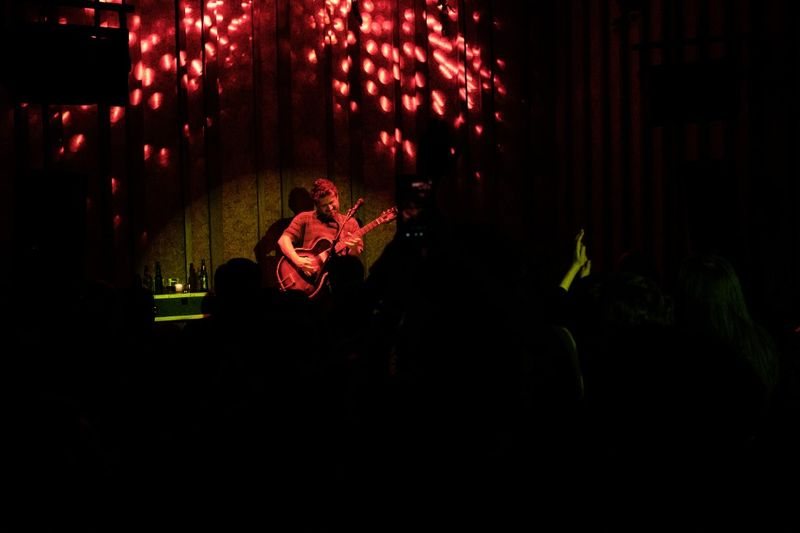
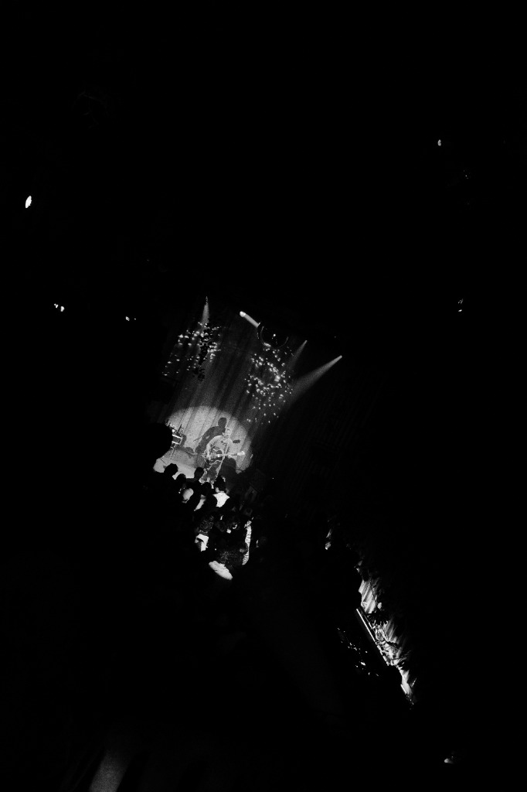
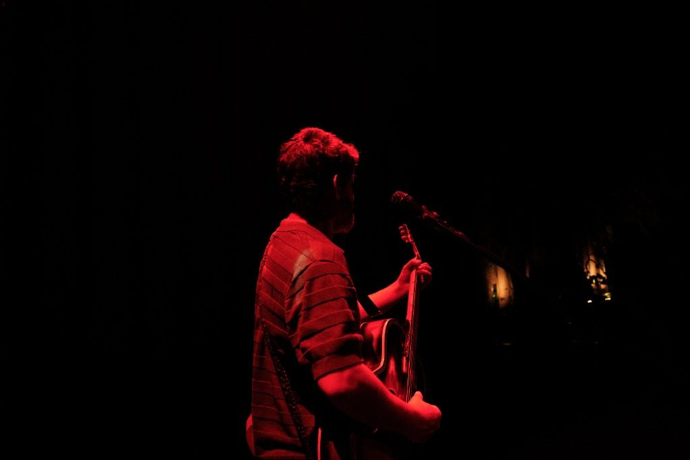
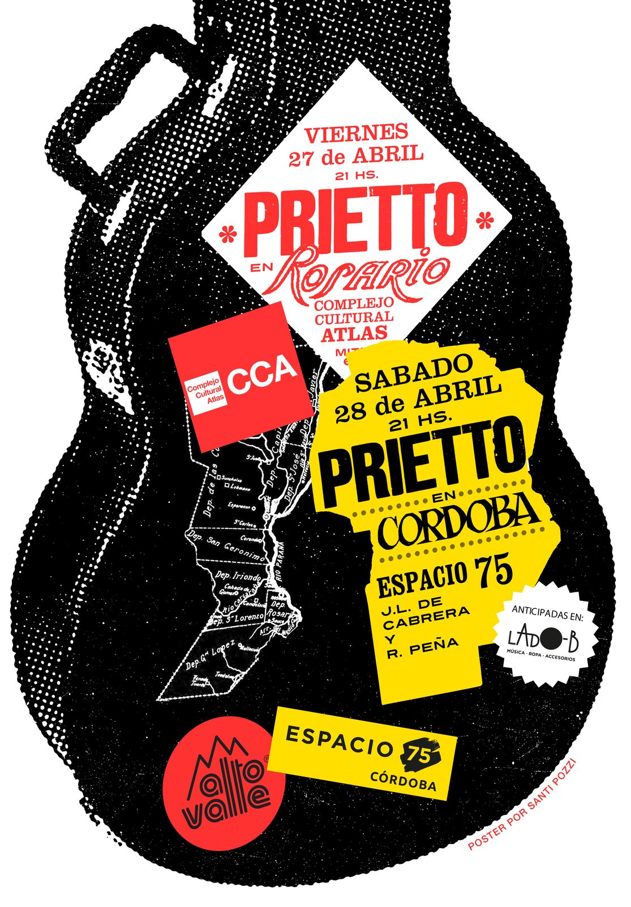
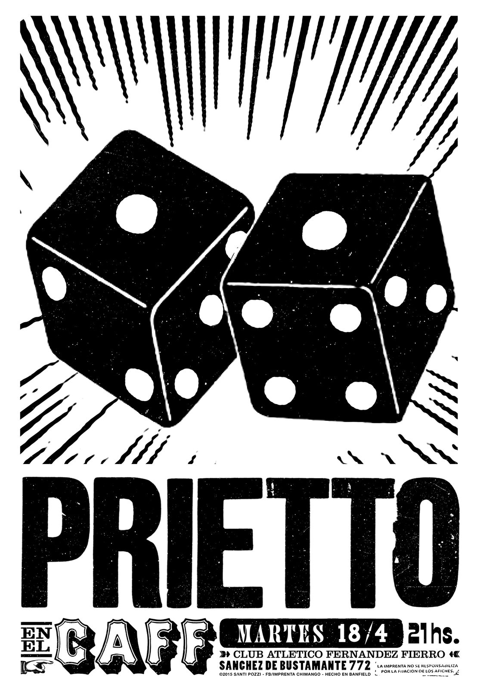
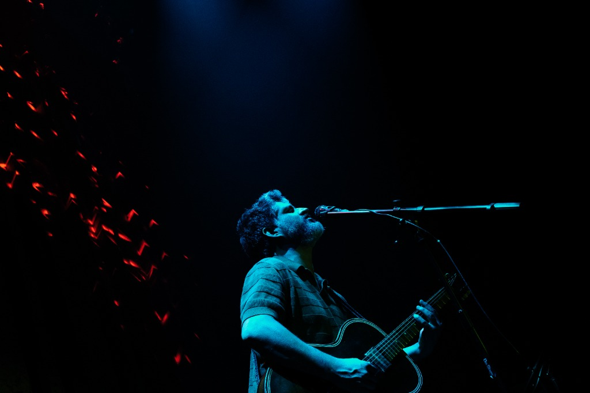
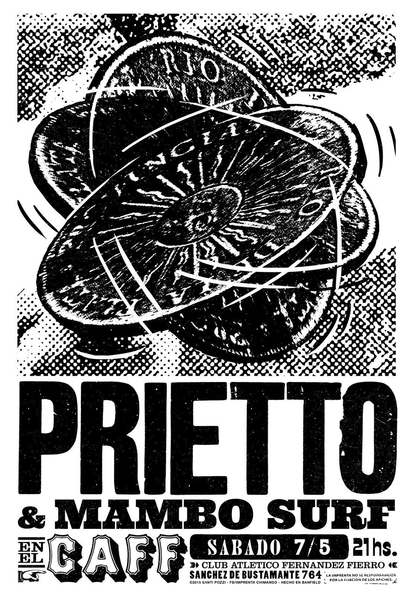
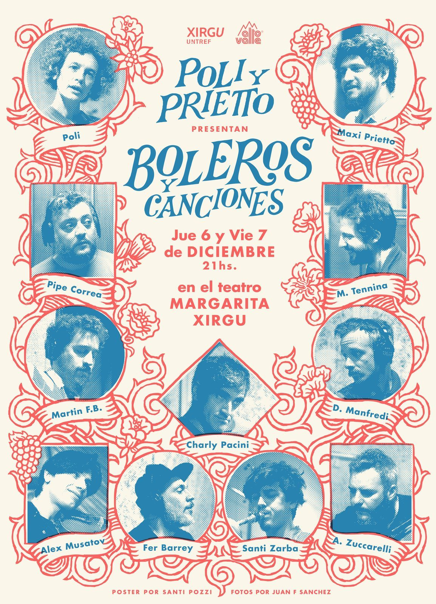

Maxi Prietto — Solista, Los Espíritus y Prietto Viaja al Cosmos con Mariano.
Buenos Aires · AR

seguí bajando ↓
Bio
Mística
Compositor y guitarrista · escena independiente
Mística
de ensayo
Compositor y guitarrista · escena independiente
Músico, guitarrista, cantante y productor argentino que ha consolidado su carrera musical a través de la fusión del blues, el rock psicodélico y los ritmos latinoamericanos. Conocido por su trabajo solista y por ser el principal compositor de Los Espíritus, agrupación fundada en 2010 con la que ha editado seis álbumes de estudio, entre los que destacan Gratitud, Agua ardiente y el conceptual Sancocho Stereo. Su trabajo más reciente, La montaña (2023), fue grabado de manera artesanal bajo la producción de Mario Breuer y mezclado en Nueva York por Joe Blaney, afianzando un sonido característico basado en la experimentación y la instrumentación eléctrica combinada con percusiones.
A lo largo de su trayectoria, Prietto ha mantenido un constante intercambio con músicos de diversas escenas, tanto locales como internacionales. Su discografía y presentaciones en vivo registran colaboraciones junto a guitarristas como Marc Ribot y el saxofonista estadounidense Dana Colley, miembro de Morphine. Asimismo, ha compartido grabaciones y escenarios con figuras de la música argentina como Juanse, Gustavo Santaolalla, Daniel Melingo y Piti Fernández, participando en reversiones de canciones de su propio catálogo como «El palacio» y «La rueda que mueve al mundo».
Con esta propuesta el músico ha desarrollado un circuito de giras internacionales recurrente, presentándose con regularidad en escenarios de Colombia, México, Ecuador, Chile, Brasil y Bolivia.

Fechas
La ruta
Fechas confirmadas · mapa psicodélico del Cono Sur
La ruta
nocturna
Fechas confirmadas · mapa psicodélico del Cono Sur
Discografía
Registros
Registros
de obra


Archivo
Rumbo a
Rumbo a
Hong Kong










Contacto
Llegar
Prensa · booking · material físico
Llegar
al cosmos
Prensa · booking · material físico

Para contrataciones, notas de prensa o consultas sobre material físico y vinilos, escribinos a través de los canales oficiales.

Buenos Aires, Argentina · © 2026
Prietto · Cosmos, Blues y Canción